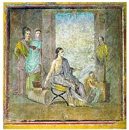

Art
Preparation of an animal sacrifice; marble, fragment of an architectural relief, first quarter of the 2nd century CE; from Rome, Italy

Pompeian painter with painted statue & Pompeian painter with framed painting Pompeii.Best Known Wall Painting from Herculaneum (Pompeian)
The Wedding of Zephyrus and Chloris (54–68 AD, Pompeian Fourth Style) within painted architectural panels from the Casa del Naviglio